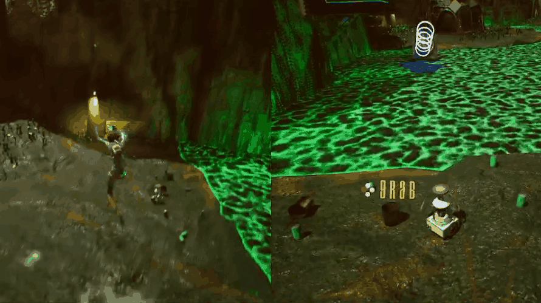

Project
Planet Red
A split-screen couch co-op game.

Overview
Planet Red is a couch co-op puzzle platformer that was developed in Unreal Engine. Two players each control characters with unique abilities that must work together to navigate challenging environments and solve physics-based puzzles.
One character is a rat piloting a robot capable of jumping, dashing and interacting with magnetic fields. The other is an astronaut equipped with both a magnetic gun that creates magnetic fields which can either attract or repel magnetic the robot or other objects and boots which allow the character to double-jump. The core gameloop revolves around combining these abilities to overcome obstacles and progress through levels.
My contribution
- Movement
- Easing work for designers with exposed events
- Customizable skin changer
Challenges & solutions
The problem
Our groups level designer went on vacation the last two weeks of development, which slowed down development greatly.
How We solved it
Level design had to become a group effort where designers, programmers and sound designern intervened together in order to create a finished level 2. It ultimately worked in our favour, since we made level 2 smaller in size, but greater in complexity regarding the puzzle-solving. This meant creating a completely new puzzle-mechanic which was both fun and an educational experience.
What I learned
How to efficiently plan work ahead, and to have an open mind regarding changes during development.